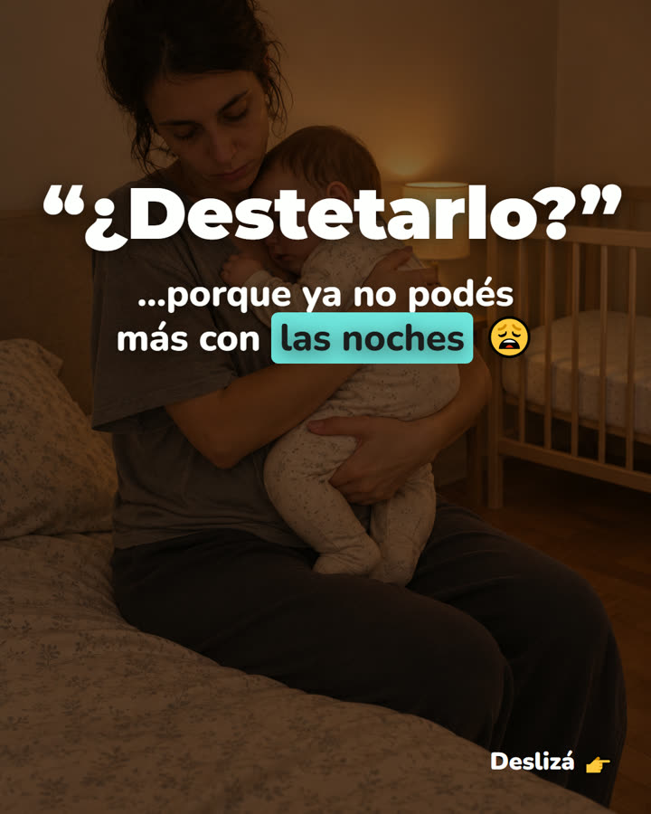
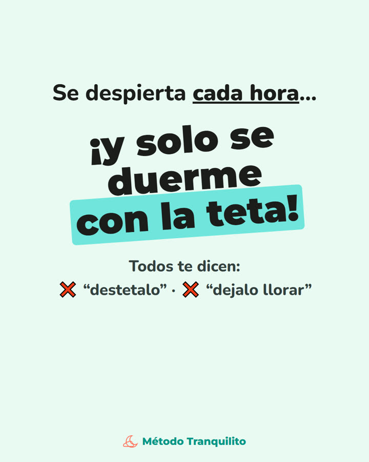
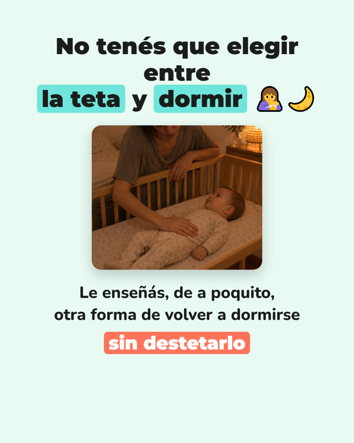
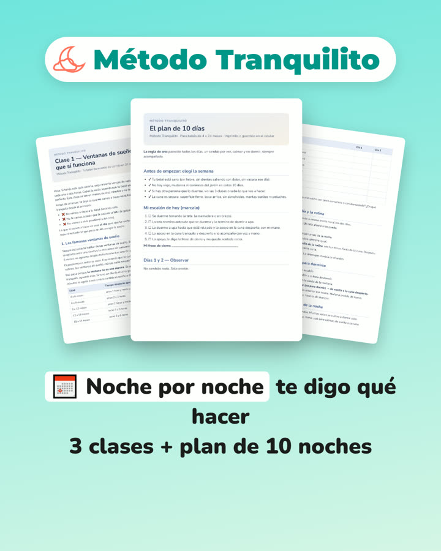
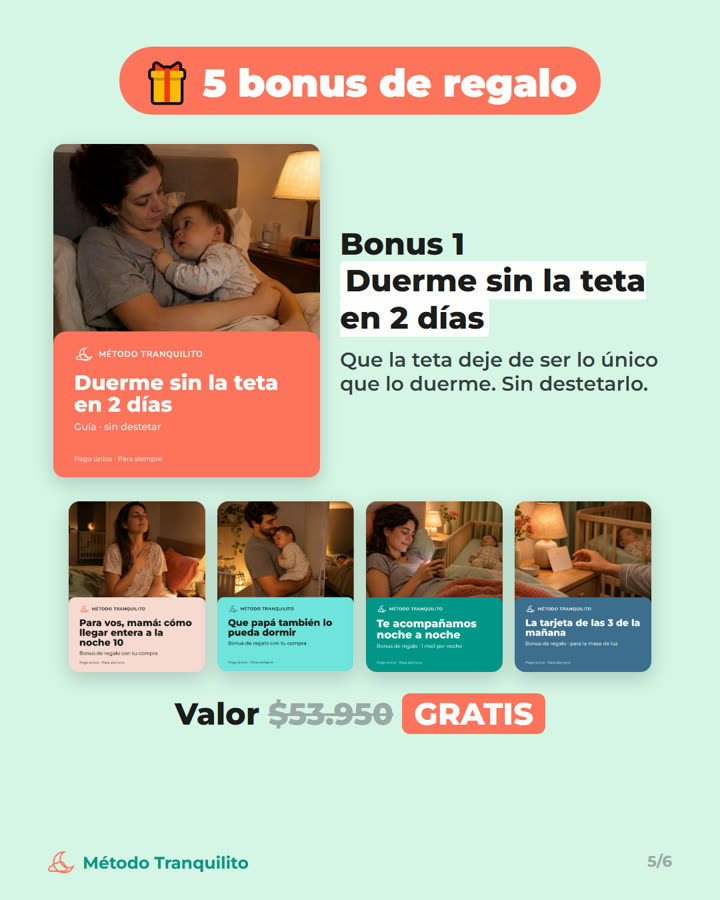
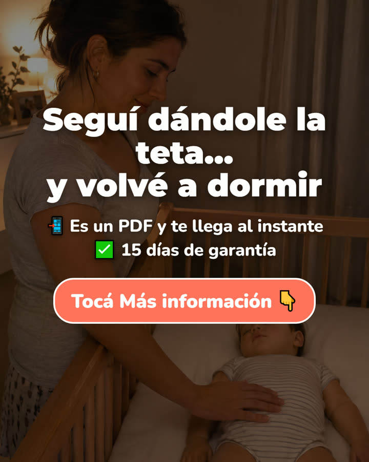
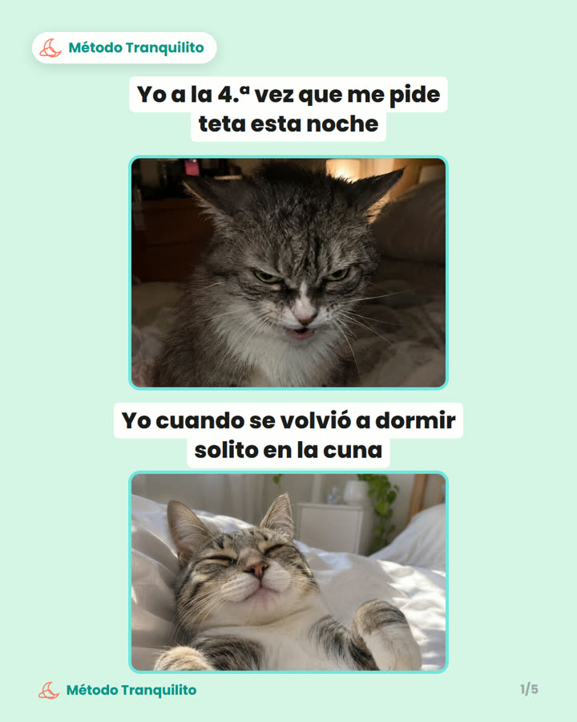
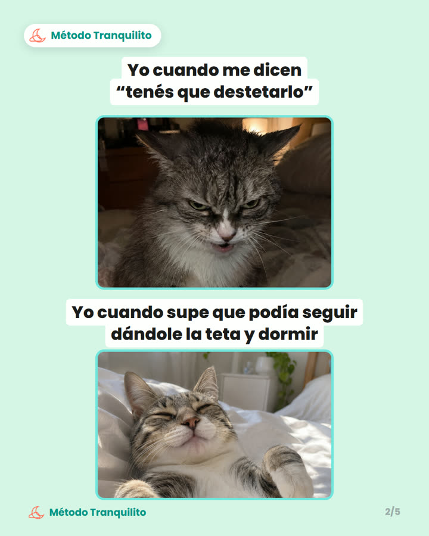
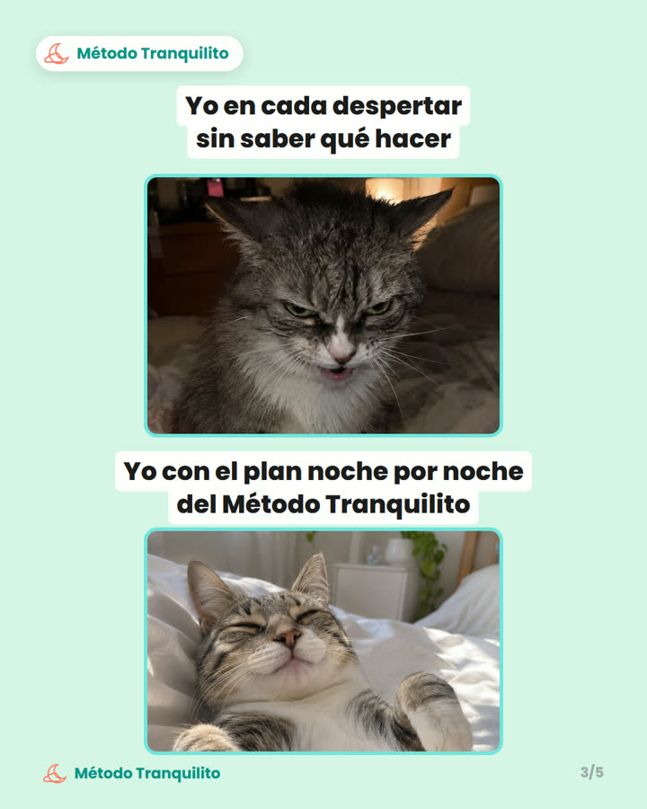
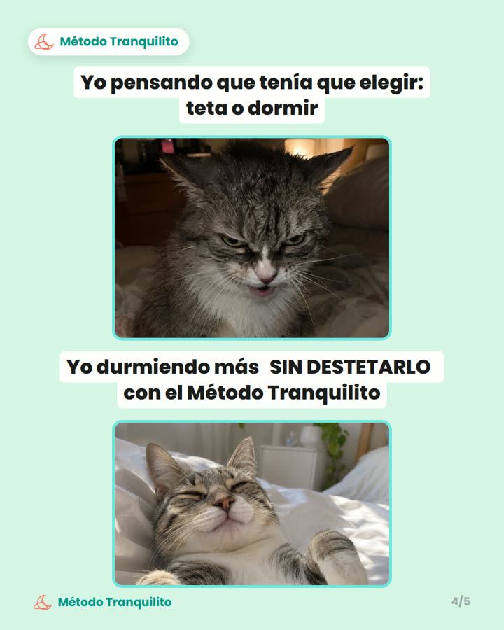

Del miércoles 18-11 a la noche al viernes 20-11 a la noche
Sigue al informe anterior (16-11 → 18-11 18:45). Fecha de corte: viernes 20-11, 22:00 (hora de Argentina).
En 30 segundos
3 ventas más: ya son 7. Las 3 vinieron del Test 3. La última trajo un producto extra del carrito y la recuperó el mail automático de "te olvidaste el carrito".
Primer anuncio con 2 ventas baratas: el video "¿Solo se duerme a upa?" vendió 2 veces con USD 12,60 (unos USD 6,30 cada venta). Era la meta del domingo 22-11 y llegó 2 días antes. Ese anuncio queda prendido.
La página de venta pasa la vara: con las ventas del Test 3 compra el 2,6 % de las visitas (la vara es 2 %). Por eso no se toca.
La oferta tiene 5 regalos: antes había 1. Ahora el precio tachado es $93.940 y se paga $18.990. Se sumó un mail por noche durante los 10 días del plan.
Test del sueño publicado: un cuestionario gratis que le explica a la mamá por qué se despierta su bebé y la manda a comprar.
Test 4 prendido hoy a las 21:40: 5 anuncios nuevos. El ángulo principal es "que duerma mejor sin destetarlo", que ya vende afuera.
El mercado se llenó: hay unas 12 copias en pesos, y una usa directamente nuestro nombre. Respondimos con más regalos y un ángulo propio.
7ventas reales desde el arranque (3 en este período)
~USD 172gastado en Meta desde el arranque (Test 3: USD 55,67)
~USD 18,60costo por venta del Test 3 (Test 1 + Test 2: ~USD 29)
2,6 %de las visitas compra (vara: 2 %; antes 1,5 %)
Lectura honesta: todavía cada venta cuesta más de lo que deja. Pero el costo por venta bajó de ~USD 29 a ~USD 18,60 y ya hay un anuncio que vende a USD 6,30. La escuela dice que cuando se vende sin ganancia, lo que hay que hacer es seguir sacando anuncios nuevos hasta encontrar ganadores. Por eso el Test 4 salió tan rápido.
1. Test 3: cómo viene
Las ventas se cuentan en la tienda (Impultienda y Utmify), no en Meta. Gastos tomados de Meta al corte.
Anuncio
Gastado
Ventas reales
Estado
Video "¿Solo se duerme a upa?" (versión B)
USD 12,60
2
Sigue prendido
Con 2 ventas o más se queda. Ventas: jue 19-11 20:22 y vie 20-11 19:40.
Carrusel "¿Otra vez?"
USD 12,62
1
Prendido
Venta jue 19-11 13:36. Si llega a USD 13 sin la segunda, se apaga.
Imagen "los despertares pasan en 3 pasos"
USD 10,11
0
Apagado
USD 10 sin venta (vie 17:55)
Video "¿Estás esperando que se le pase solo?"
USD 10,09
0
Apagado
USD 10 sin venta (vie 15:58)
Video "precio contra la semana agotada"
USD 10,25
0
Apagado
USD 10 sin venta (vie 13:59)
Total Test 3
USD 55,67
3
Qué aprendimos del Test 3
Lo que ya vendía, con mejor edición, vendió otra vez. Los 2 anuncios con ventas siguen la línea de lo que vendió antes: "noche a upa" (Test 1) y el meme de los despertares (Test 2).
Los 3 ángulos nuevos no vendieron (precio, "no es una fase" y la imagen que explica). Que pasen la regla de 3 en la competencia no garantiza que funcionen con nosotras.
El carrusel es el que más clics saca: 3,3 de cada 100 personas que lo ven tocan (la vara es 1,5).
Una venta que Meta mostraba no existió: el miércoles a la noche alguien quiso pagar con tarjeta desde "no es una fase" y el pago no entró. Por eso las ventas se cuentan en la tienda y no en Meta.
Las 3 ventas del período
Cuándo
De qué anuncio
Cobrado
Detalle
Jue 19-11 13:36
Carrusel "¿Otra vez?"
$18.990
Pagó con Mercado Pago
Jue 19-11 20:22
Video upa (versión B)
$18.990
Utmify la mostraba pendiente; se confirmó en la tienda
Vie 20-11 19:40
Video upa (versión B), en el feed de Instagram
$27.980
Sumó el extra "De tu cama a su cuna" ($8.990). Había dejado el carrito y volvió por el mail automático. Es la primera venta recuperada por mail.
De las 7 compradoras, 2 ya agregaron un extra del carrito.
2. La página de venta: se midió y queda quieta
El jueves 19-11 la página cumplió 48 horas sin cambios y se midió con Clarity, que graba cómo navega la gente. Nuestras propias visitas de prueba no se contaron.
Qué se midió
Resultado
Visitas reales (jue 19-11 a la mañana)
88 visitas, 1 compra = 1,1 %
Bajo la vara
Visitas reales (jue 19-11 a la noche, con las ventas del Test 3)
~117 visitas, 3 compras = 2,6 %
Pasa la vara (2 %)
¿Los clics que llegan son de calidad?
95 % llega bien a la página (vara: 65 %)
Bien
¿Cuántos bajan de la primera pantalla?
7 de cada 10 no bajan nunca
A mejorar
¿Qué es lo que más tocan?
La pregunta "¿Para qué edad sirve?", más que el botón de compra
Dato útil
Se preparó un cambio para la primera pantalla: mostrar arriba "Para bebés de 4 a 24 meses".
Se decidió no publicarlo. Con el 2,6 % la página ya pasa la vara, y la escuela pide no tocar lo que anda: hacer un cambio cada 48 horas y solo si hace falta. El cambio queda guardado para cuando toque. Ahora lo que más mueve los números son los anuncios.
La compradora del jueves entró 3 veces en hora y media antes de comprar. No todas deciden en la primera visita.
3. Qué se hizo, día por día
Miércoles 18-11 (noche): Test 3 en marcha
El corte automático del Test 3 quedó programado para revisar cada 20 minutos con la regla de siempre: USD 10 sin venta se apaga y, con 1 venta, hasta USD 13.
Jueves 19-11: medición, revisión general y estudio del mercado
Medición de la página (punto 2). Llegaron 2 ventas del Test 3 y la página quedó quieta.
Revisión general de todo el sistema: tienda, píxel de Meta (la compra se registra con buena calidad), mails automáticos, Utmify, Clarity y el orgánico, que publica 3 veces por día. Todo funcionando. Un aviso: la cuenta de anuncios figura con un cobro pendiente. Si no entra el pago, Meta puede frenar los anuncios.
Estudio del mercado (punto 4).
Encuesta a las 6 compradoras que había hasta ese día: 3 preguntas por mail para entender por qué compraron y con qué palabras lo cuentan. Las respuestas se guardan tal cual. Se publican en la página solo si ellas dan permiso.
Viernes 20-11 (madrugada): estudio de Latinoamérica, regalos y test
Mercado por país: apareció otra competidora argentina, "Duerme de Corrido", que vende a $16.990 con 8 regalos. México está casi sin competencia en pesos mexicanos. Colombia, Chile y Perú están flojos.
Regalos: de 1 a 3 en la página, el pago y el PDF. Más tarde se pasó a 5 (ver la tarde).
Test del sueño publicado (punto 5).
Viernes 20-11 (mediodía): nos copiaron el nombre
Apareció una tienda que vende "El método tranquilidad". Usa nuestro nombre, nuestra promesa y la misma estructura (3 clases + 10 noches) a $19.990. Cambiaron las palabras, pero la idea es la misma.
Se armó una denuncia por uso de la marca y se mandó a Impultienda. Ojo: la marca no está registrada en el INPI, así que lo más probable es que la rechacen.
Decisiones para diferenciarnos:
"Método Tranquilito" es el nombre y no se inventa otro. Lo diferente se muestra en lo que trae adentro: el acompañamiento noche por noche y los regalos.
El Test 4 se reescribió con un ángulo propio.
Los regalos pasan de 3 a 5.
El trabajo se repartió en chats por tema para avanzar en paralelo.
Viernes 20-11 (tarde): la oferta nueva, publicada
Todas las copias argentinas regalan entre 3 y 8 cosas; nosotras teníamos 1. La escuela dice que la oferta tiene que valer mucho más de lo que se paga.
Antes (18-11)"De $74.980 a $18.990": el método más 1 regalo ("Para vos, mamá").
Ahora"De $93.940 a $18.990": el método ($39.990) más 5 regalos que valen $53.950, cada uno con su tapa y su precio tachado.
Regalo
Valor
Qué es
1 · Duerme sin la teta en 2 días
$14.990
Es el regalo principal en los anuncios. Antes se vendía aparte en el carrito.
2 · Para vos, mamá
$12.990
Cómo llegar entera a la noche 10
3 · Que papá también lo pueda dormir
$9.990
Para repartir las noches
4 · Te acompañamos noche a noche
$8.990
Un mail por noche durante el plan (ver abajo)
5 · La tarjeta de las 3 de la mañana
$6.990
Una hoja para tener a mano cuando se despierta
Igual en todos lados: página de venta, página de pago y resumen del pedido, donde ahora se lee "+5 bonos gratis" y "Ahorrás $74.950".
Mails noche a noche activados: son 8 mails nuevos que se suman a los 4 que ya había. Así la compradora recibe un mail casi todas las noches del plan, hasta el día 15. Esto cumple lo que promete el regalo 4.
Página de pago más clara: los regalos pasaron de un párrafo corrido a una lista con su tapa, y los regalos 4 y 5 tienen tapa con foto (antes eran un emoji).
Carrito ordenado de más barato a más caro ($7.990 → $8.990 → $9.990 → $12.990), como enseña la escuela: los extras arrancan bajos y suben. En el lugar de "sin la teta", que ahora es regalo, entró "De tu cama a su cuna" ($8.990), que vendió esa misma noche.
Viernes 20-11 (noche): test corregido y Test 4 prendido
Se corrigió el test del sueño y la venta 7 entró a las 19:40.
A las 21:40 se prendió el Test 4 (punto 6).
4. El mercado: qué encontramos
Afuera, 7 marcas venden esto con muchos anuncios prendidos hace meses (Brasil, México y otros países). Es la señal de que el producto se vende.
En Argentina hay ~12 copias en pesos y ninguna se destaca. Todas regalan entre 3 y 8 cosas, y una copió nuestro nombre.
Ángulo nuevo que pasa la regla de 3: "que duerma mejor sin destetarlo", para la mamá que da la teta y no quiere elegir entre la teta y dormir. Es la base del Test 4.
México aparece casi sin competencia en moneda local. Queda anotado para cuando toque abrir el segundo país.
Este estudio pasa a hacerse todas las semanas (los jueves), a la par de mirar nuestros números.
5. Test del sueño: la puerta nueva
Es un cuestionario gratis de unos 3 minutos. Está copiado de lo que mejor le funciona a una marca grande de Latinoamérica.
La mamá responde cómo duerme su bebé y recibe un resultado con el nombre del bebé que le explica qué lo está despertando.
El resultado le presenta el Método Tranquilito igual que la página de venta (lo que recibe, los 5 regalos y el precio) y todos los botones la llevan a pagar.
Deja su mail, y eso nos sirve para escribirle aunque no compre ese día.
Se probó de punta a punta como si fuera una clienta nueva, hasta la página de pago real.
Desde hoy le manda gente un anuncio del Test 4.
6. Test 4: las 5 piezas que corren desde hoy
Cómo se eligieron:
2 piezas con el ángulo nuevo "sin destetarlo": un carrusel y un meme.
1 variación del ganador: el video upa, con otro arranque.
2 formas nuevas sobre ángulos que ya venden:
una mamá que habla a cámara, hecha con inteligencia artificial;
un video que lleva al test del sueño en vez de a la página de venta.
Reglas de edición para todas las piezas:
los colores de la marca siempre;
música y sonidos propios en cada pieza;
un sonido en las palabras clave;
la tapa del PDF cuando se nombra el método;
el texto lejos de los bordes, para que Meta no lo tape.
El regalo principal que se anuncia es "Duerme sin la teta en 2 días". El precio no aparece.
Cada pieza tiene USD 5 por día y la regla de corte de siempre. Hoy están en revisión de Meta.






1 · ¿Destetarlo? Antes, deslizá
Carrusel de 6 tarjetas (deslizá) con el ángulo nuevo "sin destetarlo". Mismo formato que el carrusel que vendió en el Test 3.
¿Querés que duerma más pero no querés destetarlo? 🤱
🌙 No tenés que elegir entre la teta y dormir
🧩 Con el Método Tranquilito le enseñás otra forma de volver a dormirse
📅 Noche por noche te digo qué hacer, 10 noches con vos al lado
🤍 Sin dejarlo llorar solo
🎁 De regalo: Duerme sin la teta en 2 días + 4 bonus más (valor $53.950)




2 · ¿Teta o dormir? Las dos
Meme en tarjetas (deslizá), en la línea del meme que vendió en el Test 2, con el ángulo "sin destetarlo".
¿Teta o dormir? Las dos 🤱🌙
😮💨 Si se despierta y solo vuelve a dormirse con la teta
🧩 El Método Tranquilito te dice qué hacer, noche por noche
🤍 Sin destetarlo y sin dejarlo llorar solo
🎁 De regalo: Duerme sin la teta en 2 días + 4 bonus más
3 · ¿45 minutos a upa?
Variación del ganador del Test 3 (2 ventas a USD 6,30): mismo mensaje con otro arranque.
¿45 minutos a upa y apenas lo apoyás en la cuna abre los ojos? 🌙
💛 No estás haciendo nada mal
🧩 Aprendió a dormirse de una sola forma: en tus brazos
🌱 Con el Método Tranquilito aprende a dormirse solito en 10 días
🤍 Sin dejarlo llorar
4 · Una mamá que cuenta (a cámara)
Forma nueva: una mamá habla a cámara, hecha con inteligencia artificial y armada sobre un anuncio que vende hace meses. Ángulo: los despertares, sin dejarlo llorar.
¿Cuántas veces se despertó tu bebé anoche? 😮💨
🤍 Para que duerma mejor NO hace falta dejarlo llorar
🧩 Con el Método Tranquilito se duerme más fácil y se despierta menos
📅 3 clases + plan de 10 noches
5 · ¿Qué lo está despertando? (al test)
Es el único anuncio que no va a la página de venta: lleva al test del sueño gratis. Sirve para medir si el test vende más que la página.
¿Otra vez?… y ni siquiera pasaron 2 horas 😮💨
🧩 Descubrí por qué tu bebé se sigue despertando con este test gratis del Método Tranquilito
⏱️ 3 minutos · 🤍 gratis
El botón de todas las piezas es "Más información". Las referencias de la competencia no se publican acá.
7. Lo que sigue
Test 4: corte automático con la regla de siempre: USD 10 sin venta se apaga y, con 1 venta, hasta USD 13. Antes de esos montos no se saca ninguna conclusión.
Test 3: el video upa queda prendido. El carrusel "¿Otra vez?" se apaga si llega a USD 13 sin la segunda venta. Si conviene subirle el presupuesto al video upa lo decide Matías.
Cobro de la cuenta de anuncios: hay que revisar la facturación para que Meta no frene los anuncios.
Página de venta: quieta mientras siga pasando la vara.
Extras del carrito y oferta después de la compra: se miden cuando haya 10 compradoras (hoy son 7).
Encuesta: leer las respuestas de las compradoras y, con su permiso, sumar testimonios reales. Hoy la página no tiene ninguno.
Domingo 22-11: repaso de metas. La primera (un anuncio con 2 ventas o más a menos de USD 10 cada una) ya está cumplida. La próxima es para el 29-11: 3 anuncios ganadores y un día sin perder plata.